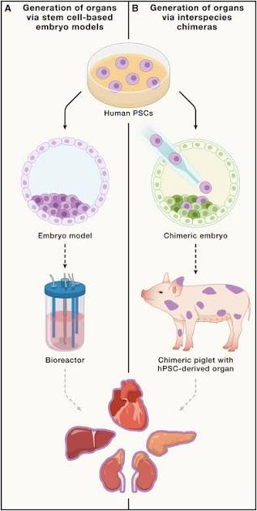

Humans 2050: The Next Evolution?
Inspired by the ideas of historian Yuval Noah Harari.
What You'll Walk Away With
- Identify major technologies that may reshape humans.
- Distinguish repair from enhancement.
- Discuss one ethical question raised by these technologies.
No wrong answers — just notice your first instinct. (We'll come back to this.)
Repairing Humans
From Curing to Preventing

CRISPR: real technology, in use today.
Once we can repair humans… it's tempting to improve them.
Enhancing Humans
This is where Harari believes the future becomes fundamentally different: from Healthy → Sick to Good → Better.

Lab-grown tissue, today

Two real research paths
Almost everyone says yes.
But perhaps the biggest enhancement won't come from biology at all…
Merging Humans With Machines
For thousands of years, technology stayed outside us. Now it's moving onto us… and perhaps eventually into us.
A science-fiction extreme of "merging" — not a real product.
If we can repair ourselves… enhance ourselves… merge with machines… what happens next?
Redesigning Humans
What Makes You "You"? Has Your Answer Changed?
Now: which future feels closest?
Adapt to nature
Change nature
Change ourselves